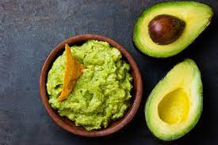

Guacamole for every day

No matter if for chips, tacos or for toast- Guacmole is always a tasty and easy treat.
And really easy to make as well! I will show you the steps.
Ingredients
- Avocado
- Lime Juice
- Salt
- Koriander
- Tabasco
Step by Step Instructions
- First you take a ripe Avocado, cut it in half and remove the seed.
- Take a spoon and put all of the fruit in a bowl. Now mash it up with a fork.
- Put your lime juice, salt and tabasco in it and mix well.
- Shop a generous amount of Koriander and put it in as well. Now it is time to taste test